Подготовила: Вайтехович Софья, 2Б класс
Гимназия № 37 г. Минска
Изучить влияние быстрого питания (фаст-фуда) на наше здоровье. Выяснить, можно ли быстро готовить вкусную еду без вреда для здоровья.
Быстрое питание – это неточное обозначение для того, о чём я собираюсь рассказать.
Фаст-фуд – это понятие на английском языке, которое у нас используют без перевода. Оно означает еду быстрого приготовления, полуфабрикаты, а также американские закусочные быстрого питания.
Немного истории
Термополии
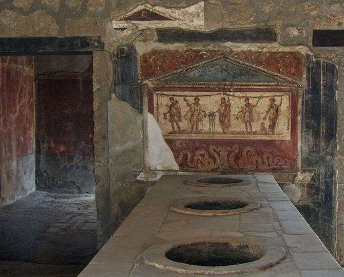
Автоматический ресторан "Хорн энд Хардарт"
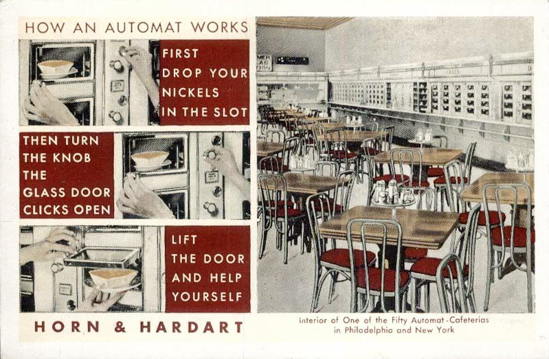
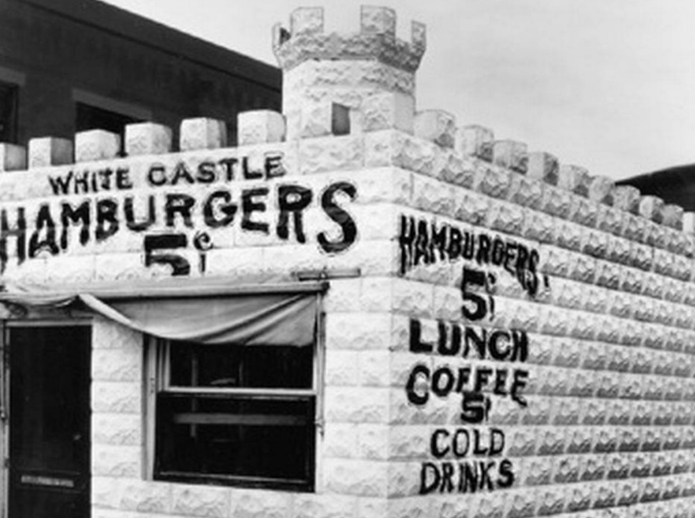 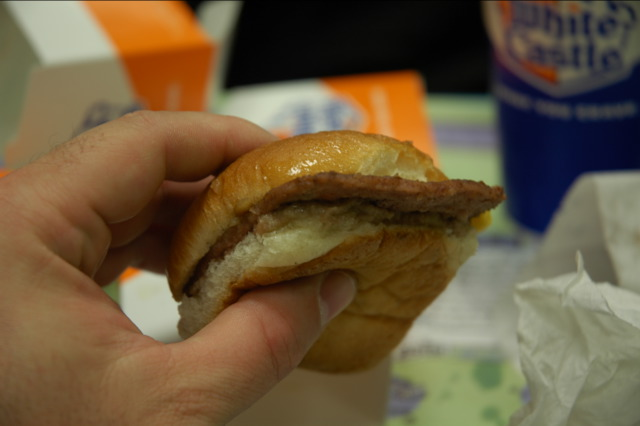
Драйв-инн и автокинотеатры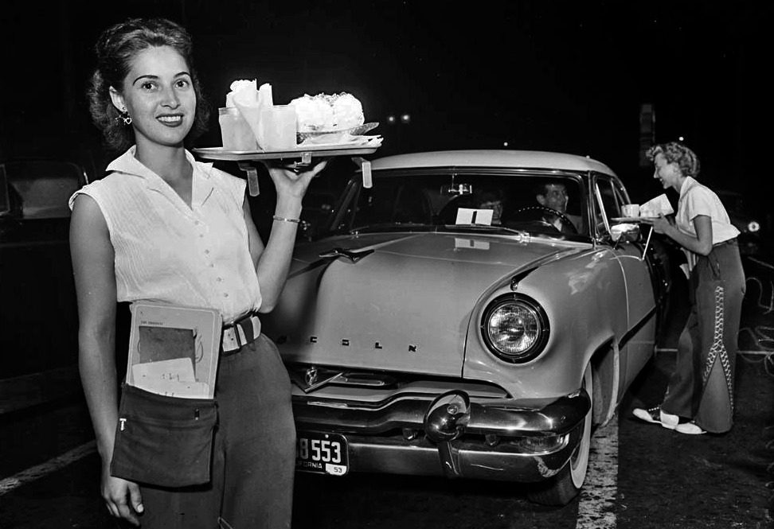 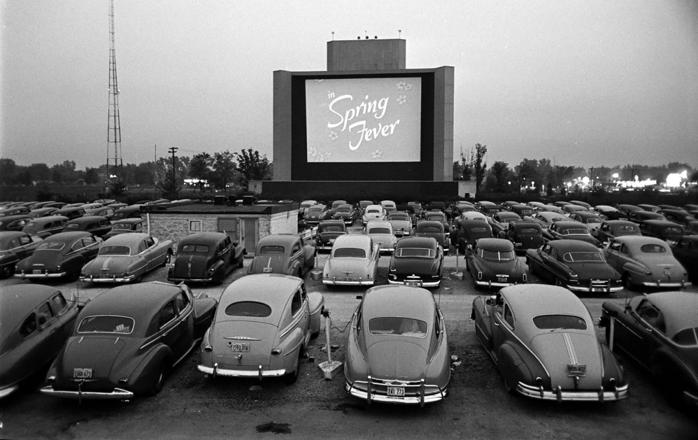
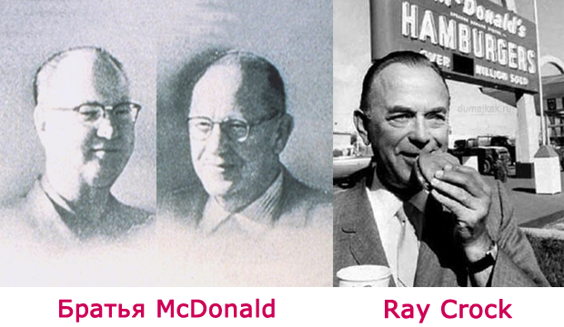- в меню входили продукты, которые люди чаще всего покупали, чтобы быстро перекусить
- можно было отказаться от поваров
- не нужна была дорогая посуда
- персонал обязательно должен быть вежливым
- большое внимание уделялось чистоте
Заведения быстрого питания стали популярными, когда люди стали много работать и у них оставалось мало времени на готовку еды.
С другой стороны, в заведениях быстрого питания есть стало дешевле, чем дома.
Какая еда - фастфуд?
Обычно это: картофельные чипсы, кукурузные хлопья, почти вся еда из ресторанов быстрого питания (бургеры, картошка фри, сладкие коктейли), а также разные сладкие газированные напитки, например, кола.
Не все так просто
Очень важно, чтобы наша еда была разнообразной и содержала все эти вещества в достаточном количестве.
В фаст-фуде много энергии из жиров и сахаров.
Жиры используют самые дешевые - маргарины.
Сахара – это быстрое топливо для нашего организма.
Использование отходов – то что дома мы обычно выбрасываем (сухожилия, хрящи, кожу).
Использование химикатов – добавляются консерванты, заменители сахара, усилители вкуса.
Американцы более 100 лет питались фаст-фудом.
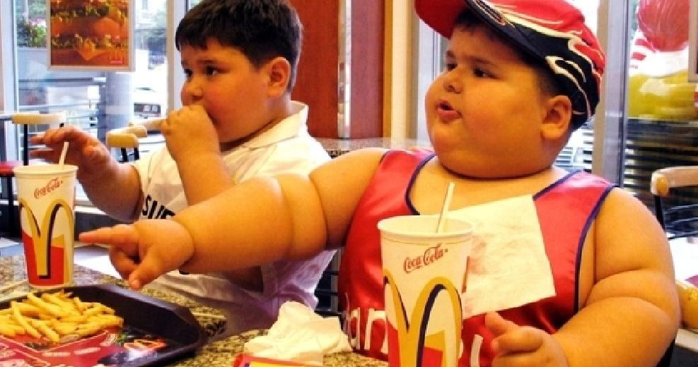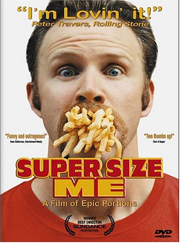
Выступление британского повара Джейми Оливера: «Обучите каждого ребёнка тому, что такое еда»
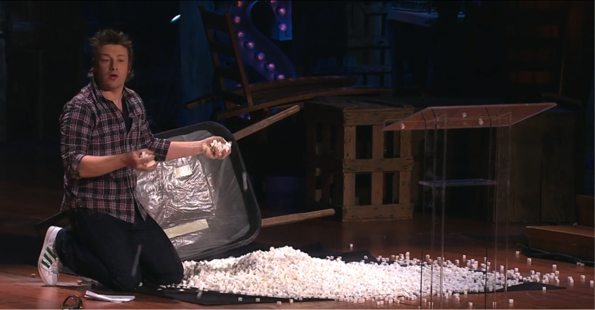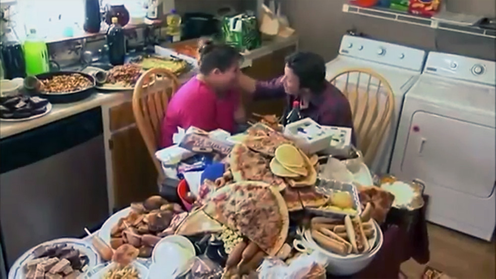
- "Обучите каждого ребёнка тому, что такое еда"
- "Научите детей готовить!"
- Готовьте с нуля, а не из полуфабрикатов
- Готовим за 15 минут.
Готовить весело! Я научилась печь блины и готовить фруктовый салат.